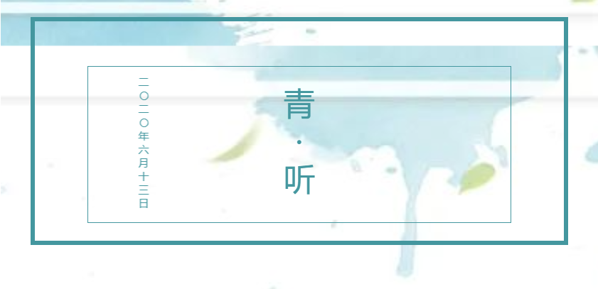
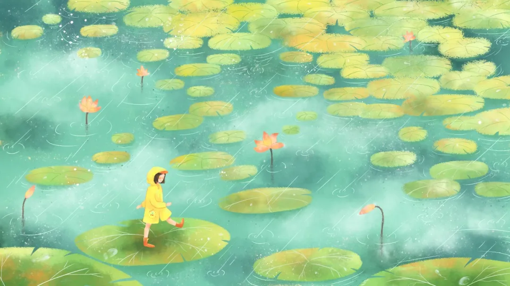
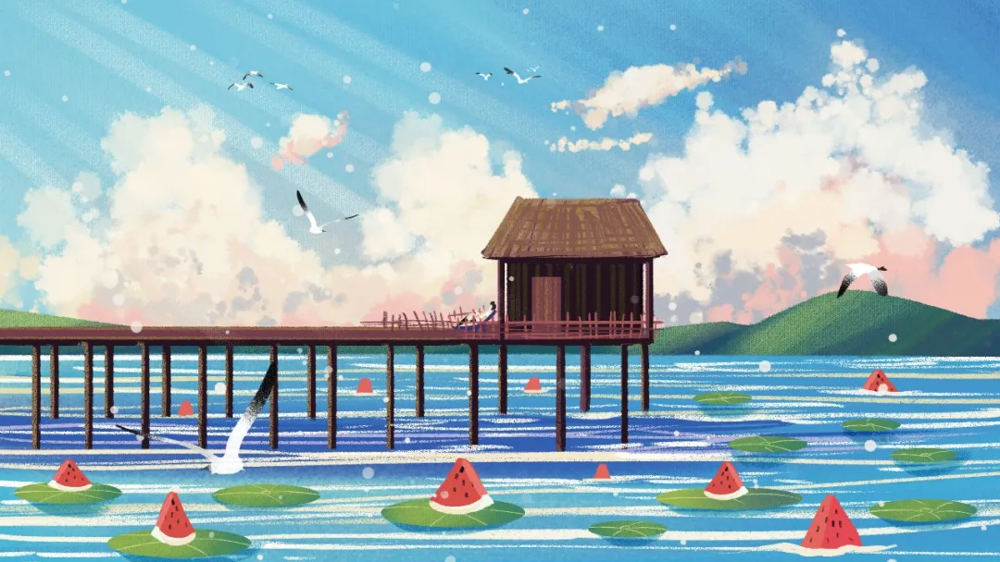
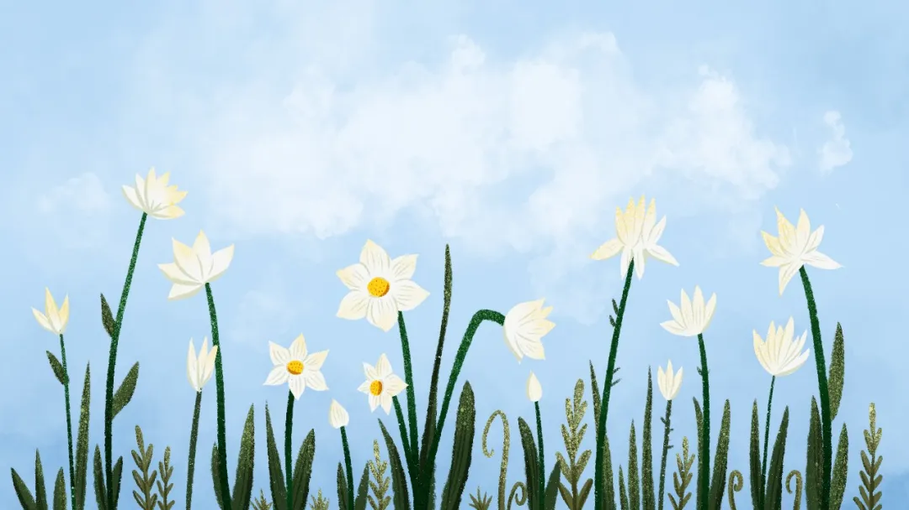

有位作家曾说：“人世间真是难处的地方，说一个人‘不通世故’，固然不是好话，但说他‘深于世故’也不是好话。”
是呀，世事往往多磨，很多时候我们不得不跟人、跟事打交道。如何摸索出为人处世的道理，同时保留住真实的自我，这其中的尺度是一种智慧。
真正的成熟，不是变得圆滑，不是越发的世故，更不是被生活打败后，沦为苟且，而是养成一颗柔软且宽厚的心，知世故而不世故，历圆滑而留天真。

古语有云：“上善若水，水善利万物而不争。”
知世故而不世故的人，往往有着一颗柔软心，如水一般，善良而不张扬，温柔、宽厚，润物又细无声。
他们既有海纳百川的胸怀，也有足够的智慧，表达那份善意与同情。
最好的善良，莫过于看破不说破，在施与善意的同时，顾忌到他人自尊，不戳破他人的难堪，给人留一份体面。
知世故而不世故，是内心有光芒的善良，时时刻刻为他人着想，柔软润泽春风化雨，让人温暖妥帖。
这种对生命的尊重，更是一份有人情味、有温度的品德。

一位名人曾说：世上只有一种英雄主义，就是在认清生活真相之后依然热爱生活。
深以为然，真正的成熟不是世故，不是经受挫折之后的苟且。而是享受人生而不沉湎、历经苍凉而不消极，以积极心态面对生活的好与坏。
一个人未经世故，容易被浮华迷惑，待浮华散去，便感到无尽的空虚，而饱经世故而不世故的人，见过人世间的最高与最低处，哪怕生活凌厉，依然内心向暖。
很多人自以为深谙世事，人情练达，周旋于推杯换盏之间，为蝇头小利察言观色，早就忘了自己最初的模样。
人世繁杂，一个人最可贵的，莫过于虽然饱经世故，但又能保持单纯，从而获得内心的淡定与从容。
知世故而不世故，处江湖而远江湖。人情冷暖已看透，赤子之心永不丢。
世事洞穿，天真不泯——这才是人生大境界。
书中有言：世利纷华，不近者为洁，近之而不染者，为尤洁。
成熟，不是一副沧桑的外表，或圆滑虚伪的做派，而是在一地鸡毛的现实世界里，仍旧能给自己的心灵腾一亩净土，保持自己的初心。
洞察世界一切人情冷暖，悲欢离合，而选择最天真的方式去过一辈子，知世故而不世故，才能永葆住最纯粹的自己。
愿你我共勉。

文章来源：共青团中央